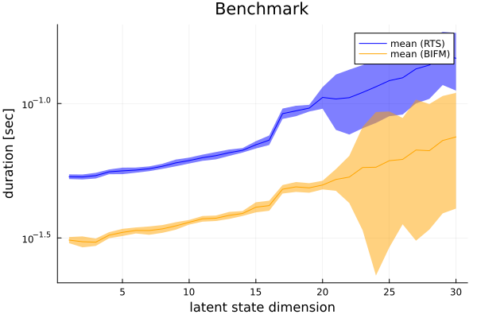

This example was automatically generated from a Jupyter notebook in the RxInferExamples.jl repository.
We welcome and encourage contributions! You can help by:
- Improving this example
- Creating new examples
- Reporting issues or bugs
- Suggesting enhancements
Visit our GitHub repository to get started. Together we can make RxInfer.jl even better! üí™
RTS vs BIFM Smoothing
___Credits to Martin de Quincey___
This notebook performs Kalman smoothing on a factor graph using message passing, based on the BIFM Kalman smoother. This notebook is based on:
- F. Wadehn, “State Space Methods with Applications in Biomedical Signal Processing,” ETH Zurich, 2019. Accessed: Jun. 16, 2021. [Online]. Available: https://www.research-collection.ethz.ch/handle/20.500.11850/344762
- H. Loeliger, L. Bruderer, H. Malmberg, F. Wadehn, and N. Zalmai, “On sparsity by NUV-EM, Gaussian message passing, and Kalman smoothing,” in 2016 Information Theory and Applications Workshop (ITA), Jan. 2016, pp. 1–10. doi: 10.1109/ITA.2016.7888168.
We perform Kalman smoothing in the linear state space model, represented by:
\[\begin{aligned} Z_{k+1} &= A Z_k + B U_k \\ Y_k &= C Z_k + W_k \end{aligned}\]
with observations $Y_k$, latent states $Z_k$ and inputs $U_k$. $W_k$ is the observation noise. $A \in \mathrm{R}^{n \times n}$, $B \in \mathrm{R}^{n \times m}$ and $C \in \mathrm{R}^{d \times n}$ are the transition matrices in the model. Here $n$, $m$ and $d$ denote the dimensionality of the latent, input and output dimension, respectively.
The corresponding probabilistic model can be represented as
\[\begin{aligned} p(y,\ z,\ u) &= p(z_0) \prod_{k=1}^N p(y_k \mid z_k)\ p(z_k\mid z_{k-1},\ u_{k-1})\ p(u_{k-1}) \\ &= \mathcal{N}(z_0 \mid \mu_{z_0}, \Sigma_{z_0}) \left( \prod_{k=1}^N \mathcal{N}(y_k \mid C z_k,\ \Sigma_W)\ \delta(z_k - (Az_{k-1} + Bu_{k-1})) \mathcal{N}(u_{k-1} \mid \mu_{i_{k-1}},\ \Sigma_{u_{k-1}}) \right) \end{aligned}\]
Import packages
using RxInfer, Random, LinearAlgebra, BenchmarkTools, ProgressMeter, Plots, StableRNGsData generation
function generate_parameters(dim_out::Int64, dim_in::Int64, dim_lat::Int64; seed::Int64 = 123)
# define noise levels
input_noise = 500.0
output_noise = 50.0
# create random generator for reproducibility
rng = StableRNG(seed)
# generate matrices, input statistics and noise matrices
A = diagm(0.8 .* ones(dim_lat) .+ 0.2 * rand(rng, dim_lat)) # size (dim_lat x dim_lat)
B = rand(rng, dim_lat, dim_in) # size (dim_lat x dim_in)
C = rand(rng, dim_out, dim_lat) # size (dim_out x dim_lat)
μu = rand(rng, dim_in) .* collect(1:dim_in) # size (dim_in x 1)
Σu = input_noise .* collect(Hermitian(randn(rng, dim_in, dim_in) + diagm(10 .+ 10*rand(rng, dim_in)))) # size (dim_in x dim_in)
Σy = output_noise .* collect(Hermitian(randn(rng, dim_out, dim_out) + diagm(10 .+ 10*rand(rng, dim_out)))) # size (dim_out x dim_out)
Wu = inv(Σu)
Wy = inv(Σy)
# return parameters
return A, B, C, μu, Σu, Σy, Wu, Wy
end;function generate_data(nr_samples::Int64, A::Array{Float64,2}, B::Array{Float64,2}, C::Array{Float64,2}, μu::Array{Float64,1}, Σu::Array{Float64,2}, Σy::Array{Float64,2}; seed::Int64 = 123)
# create random data generator
rng = StableRNG(seed)
# preallocate space for variables
z = Vector{Vector{Float64}}(undef, nr_samples)
y = Vector{Vector{Float64}}(undef, nr_samples)
u = rand(rng, MvNormal(μu, Σu), nr_samples)'
# set initial value of latent states
z_prev = zeros(size(A,1))
# generate data
for i in 1:nr_samples
# generate new latent state
z[i] = A * z_prev + B * u[i,:]
# generate new observation
y[i] = C * z[i] + rand(rng, MvNormal(zeros(dim_out), Σy))
# generate new observation
z_prev .= z[i]
end
# return generated data
return z, y, u
endgenerate_data (generic function with 1 method)# specify settings
nr_samples = 200
dim_out = 3
dim_in = 3
dim_lat = 25
seed = 42
# generate parameters
A, B, C, μu, Σu, Σy, Wu, Wy = generate_parameters(dim_out, dim_in, dim_lat; seed = seed);
# generate data
data_z, data_y, data_u = generate_data(nr_samples, A, B, C, μu, Σu, Σy);
# visualise data
p = Plots.plot(xlabel = "sample", ylabel = "observations")
# plot each dimension independently
for i in 1:dim_out
Plots.scatter!(p, getindex.(data_y, i), label = "y_$i", alpha = 0.5, ms = 2)
end
p
Model specification
@model function RTS_smoother(y, A, B, C, μu, Wu, Wy)
# fetch dimensionality
dim_lat = size(A, 1)
dim_out = size(C, 1)
# set initial hidden state
z_prev ~ MvNormal(mean = zeros(dim_lat), precision = 1e-5*diagm(ones(dim_lat)))
# loop through observations
for i in eachindex(y)
# specify input as random variable
u[i] ~ MvNormal(mean = μu, precision = Wu)
# specify updated hidden state
z[i] ~ A * z_prev + B * u[i]
# specify observation
y[i] ~ MvNormal(mean = C * z[i], precision = Wy)
# update last/previous hidden state
z_prev = z[i]
end
end@model function BIFM_smoother(y, A, B, C, μu, Wu, Wy)
# fetch dimensionality
dim_lat = size(A, 1)
# set priors
z_prior ~ MvNormal(mean = zeros(dim_lat), precision = 1e-5*diagm(ones(dim_lat)))
z[1] ~ BIFMHelper(z_prior)
# loop through observations
for i in eachindex(y)
# specify input as random variable
u[i] ~ MvNormal(mean = μu, precision = Wu)
# specify observation
yt[i] ~ BIFM(u[i], z[i], new(z[i+1])) where { meta = BIFMMeta(A, B, C) }
y[i] ~ MvNormal(mean = yt[i], precision = Wy)
end
# set final value
z[end] ~ MvNormal(mean = zeros(dim_lat), precision = zeros(dim_lat, dim_lat))
end
@constraints function bifm_constraint()
q(z_prior,z) = q(z_prior)q(z)
endbifm_constraint (generic function with 1 method)Probabilistic inference
function inference_RTS(data_y, A, B, C, μu, Wu, Wy)
# In this task the inference is unstable and can diverge
meta = @meta begin
*() -> ReactiveMP.MatrixCorrectionTools.ClampSingularValues(tiny, Inf)
end
result = infer(
model = RTS_smoother(A = A, B = B, C = C, μu = μu, Wu = Wu, Wy = Wy),
data = (y = data_y, ),
returnvars = (z = KeepLast(), u = KeepLast()),
meta = meta
)
qs = result.posteriors
return (qs[:z], qs[:u])
endinference_RTS (generic function with 1 method)function inference_BIFM(data_y, A, B, C, μu, Wu, Wy)
result = infer(
model = BIFM_smoother(A = A, B = B, C = C, μu = μu, Wu = Wu, Wy = Wy),
data = (y = data_y, ),
constraints = bifm_constraint(),
returnvars = (z = KeepLast(), u = KeepLast())
)
qs = result.posteriors
return (qs[:z], qs[:u])
endinference_BIFM (generic function with 1 method)Experiments for 200 observations
z_BIFM, u_BIFM = inference_BIFM(data_y, A, B, C, μu, Wu, Wy)
z_RTS, u_RTS = inference_RTS(data_y, A, B, C, μu, Wu, Wy);ax1 = Plots.plot(title = "RTS smoother", xlabel = "sample", ylabel = "latent state z")
ax2 = Plots.plot(title = "BIFM smoother", xlabel = "sample", ylabel = "latent state z")
mz_RTS = mean.(z_RTS)
mz_BIFM = mean.(z_BIFM)
# Do not plot all latent states, otherwise the output is just too cluttered
# The main idea here is to check that both algorithms return the (approximately) same output
for i in 1:5
Plots.scatter!(ax1, getindex.(data_z, i), alpha = 0.1, ms = 2, color = :blue, label = nothing)
Plots.plot!(ax1, getindex.(mz_RTS, i), label = nothing)
Plots.scatter!(ax2, getindex.(data_z, i), alpha = 0.1, ms = 2, color = :blue, label = nothing)
Plots.plot!(ax2, getindex.(mz_BIFM, i), label = nothing)
end
Plots.plot(ax1, ax2, layout = @layout([ a; b ]))
ax1 = Plots.plot(title = "RTS smoother", xlabel = "sample", ylabel = "latent state u")
ax2 = Plots.plot(title = "BIFM smoother", xlabel = "sample", ylabel = "latent state u")
rdata_u = collect(eachrow(data_u))
mu_RTS = mean.(u_RTS)
mu_BIFM = mean.(u_BIFM)
# Do not plot all latent states, otherwise the output is just too cluttered
# The main idea here is to check that both algorithms return the (approximately) same output
for i in 1:1
Plots.scatter!(ax1, getindex.(rdata_u, i), alpha = 0.1, ms = 2, color = :blue, label = nothing)
Plots.plot!(ax1, getindex.(mu_RTS, i), label = nothing)
Plots.scatter!(ax2, getindex.(rdata_u, i), alpha = 0.1, ms = 2, color = :blue, label = nothing)
Plots.plot!(ax2, getindex.(mu_BIFM, i), label = nothing)
end
Plots.plot(ax1, ax2, layout = @layout([ a; b ]))
Benchmark
# This example runs in our documentation pipeline, benchmark executes approximatelly in 20 minutes so we bypass it in the documentation
# For those who are interested in exact benchmark numbers clone this example and set `run_benchmark = true`
run_benchmark = false
if run_benchmark
trials_range = 30
trials_n = 500
trials_RTS = Array{BenchmarkTools.Trial, 1}(undef, trials_range)
trials_BIFM = Array{BenchmarkTools.Trial, 1}(undef, trials_range)
@showprogress for k = 1 : trials_range
# generate parameters
local A, B, C, μu, Σu, Σy, Wu, Wy = generate_parameters(3, 3, k);
# generate data|
local data_z, data_y, data_u = generate_data(trials_n, A, B, C, μu, Σu, Σy);
# run inference
trials_RTS[k] = @benchmark inference_RTS($data_y, $A, $B, $C, $μu, $Wu, $Wy)
trials_BIFM[k] = @benchmark inference_BIFM($data_y, $A, $B, $C, $μu, $Wu, $Wy)
end
m_RTS = [median(trials_RTS[k].times) for k=1:trials_range] ./ 1e9
q1_RTS = [quantile(trials_RTS[k].times, 0.25) for k=1:trials_range] ./ 1e9
q3_RTS = [quantile(trials_RTS[k].times, 0.75) for k=1:trials_range] ./ 1e9
m_BIFM = [median(trials_BIFM[k].times) for k=1:trials_range] ./ 1e9
q1_BIFM = [quantile(trials_BIFM[k].times, 0.25) for k=1:trials_range] ./ 1e9
q3_BIFM = [quantile(trials_BIFM[k].times, 0.75) for k=1:trials_range] ./ 1e9;
p = Plots.plot(ylabel = "duration [sec]", xlabel = "latent state dimension", title = "Benchmark", yscale = :log)
p = Plots.plot!(p, m_RTS, ribbon = ((q1_RTS .- q3_RTS) ./ 2), color = "blue", label = "mean (RTS)")
p = Plots.plot!(p, 1:trials_range, m_BIFM, ribbon = ((q1_BIFM .- q3_BIFM) ./ 2), color = "orange", label = "mean (BIFM)")
Plots.savefig(p, "rts_bifm_benchmark.png")
p
end
This example was automatically generated from a Jupyter notebook in the RxInferExamples.jl repository.
We welcome and encourage contributions! You can help by:
- Improving this example
- Creating new examples
- Reporting issues or bugs
- Suggesting enhancements
Visit our GitHub repository to get started. Together we can make RxInfer.jl even better! üí™
This example was executed in a clean, isolated environment. Below are the exact package versions used:
For reproducibility:
- Use the same package versions when running locally
- Report any issues with package compatibility
Status `/tmp/jl_A77yVv/Project.toml`
[6e4b80f9] BenchmarkTools v1.6.3
[91a5bcdd] Plots v1.41.6
[92933f4c] ProgressMeter v1.11.0
[86711068] RxInfer v4.7.0
[860ef19b] StableRNGs v1.0.4
[37e2e46d] LinearAlgebra v1.12.0
[9a3f8284] Random v1.11.0